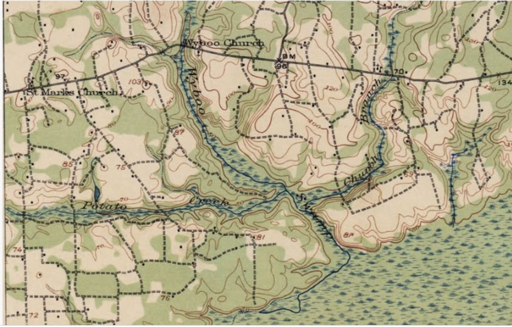
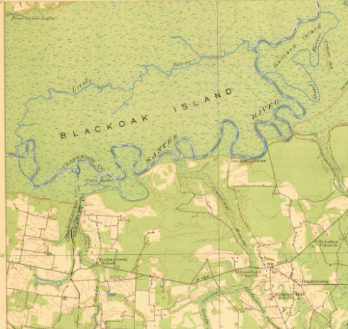
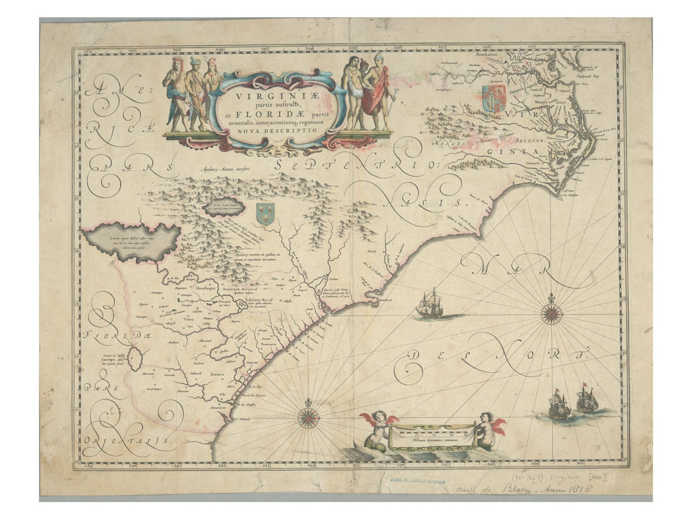

We are preparing selected historic map reproductions on heavyweight matte paper. The Manning / Wyboo Creek area is receiving particular interest. No orders or payments are being accepted yet; print quality, costs and fulfillment must be confirmed first.
PRODUCT 01 · CROPPED FROM MANNING QUADRANGLE
Historic Wyboo Creek & Potato Creek

Our selected Wyboo crop—not the entire Manning quadrangle—shows Wyboo Church, St. Marks Church, Potato Creek, Church Branch, nearby old roads and the Santee floodplain.
What will be printed: Only the precise rectangular Wyboo-area section selected from the original historical survey. This specific crop is the finished print.
Customer interest open · Not yet available for purchase
PRODUCT 02 · CROPPED FROM CHICORA QUADRANGLE
Black Oak Island & Rocks Creek School

The selected Chicora crop features Black Oak Island, Little River, the original Santee River and Rocks Creek School, with the surrounding historical roads and land.
What will be printed: Only the approved northwest historic-river area, excluding the unrelated remainder of the Chicora quadrangle.
Crop reference approved · Not yet available for purchase
PRODUCT 03 · CROPPED FROM EUTAWVILLE QUADRANGLE
Eutawville — Original Santee River Corridor

The approved crop centers the original Santee River, its adjoining floodplain and the historic communities and roads immediately beside the river. The selected crop also retains the original map title along its top edge.
What will be printed: Only this river-area selection, not the entire Eutawville quadrangle.
Crop reference approved · Not yet available for purchase
PRODUCT 04 · COMPLETE ORIGINAL · 1640
Willem Blaeu — Early Map of the Southeast

The one product in our collection that will use the complete original map, rather than a selected crop.
What will be printed: The entire Blaeu map with its original composition preserved.
Reproduction terms, print proof and price pending
About the approved crop selectionsChicora, Eutawville and Manning will each be sold as the selected historical area only, rather than as the entire source quadrangle. The full archival maps are used to prepare the final high-resolution crop, not as the finished product.
The three images above show the exact approved crop references for the products we intend to print. These are website previews rather than production-resolution archival print files. Blaeu remains the complete historical map.
Prices and orders: Print dimensions, prices, and shipping are being finalized. No paid orders or preorders are open yet. To register interest, contact the administrator of All Things Santee Cooper and name the specific map.